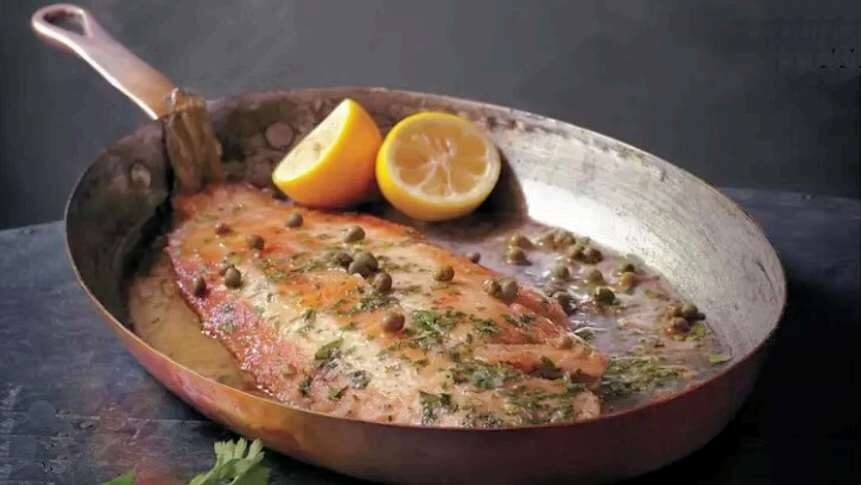

Sole Meuniere with Balsamic Butter Sauce

Ingredients
- 4 (6-ounce) sole fillets, skin removed
- 2 cups milk
- Salt and freshly ground black pepper
- 2 tablespoons olive oil
- 1 cup flour
- Salt, pepper
- 4 tablespoons finely chopped parsley
- 6 tablespoons butter
- Juice of 1 lemon
- 2 tablespoons balsamic vinegar, or to taste
- Lemon slices, for garnish
Instructions
- Soak fillets in milk for 20 minutes. Remove from milk and pat dry.
- Generously season fillets with salt and pepper.
- Heat the olive oil over a medium high heat.
- Put flour into a shallow dish and season with salt and pepper. Dredge fillets in flour, shaking off any excess flour. Dip the fillets back into the milk and then again into the flour.
- Place fillets in saute pans and cook over medium heat for 2 to 3 minutes per side, until golden brown and crispy.
- Transfer fillets from pans to a platter, sprinkle with parsley.
- Wipe the skillet clean and add the butter.
- Heat until the butter begins to brown. Add lemon juice and cook a few minutes.
- Remove from heat and stir in balsamic vinegar.
- Pour sauce over fish and serve.
- Garnish with lemon slices.